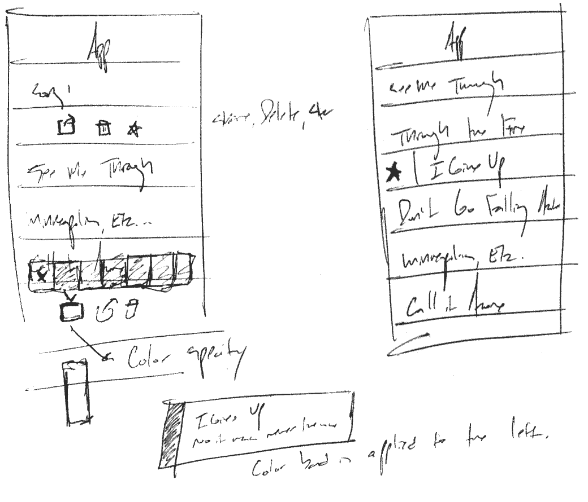
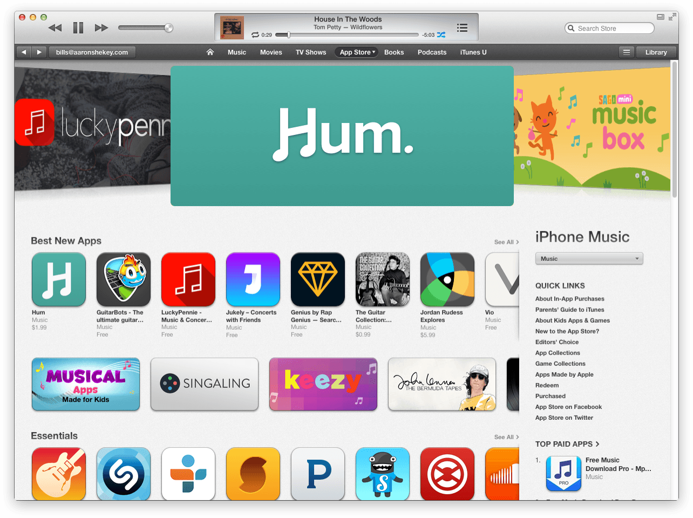
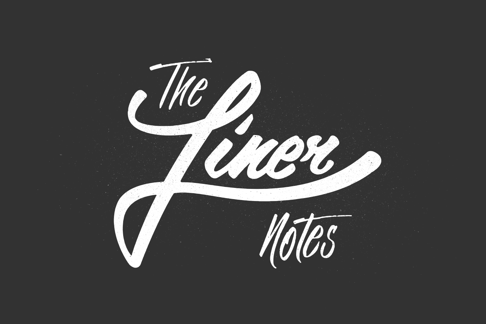
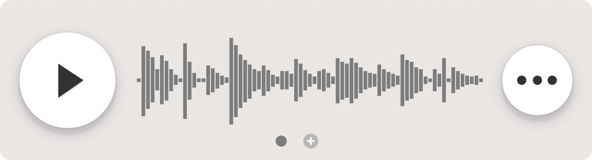
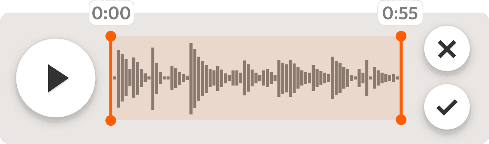
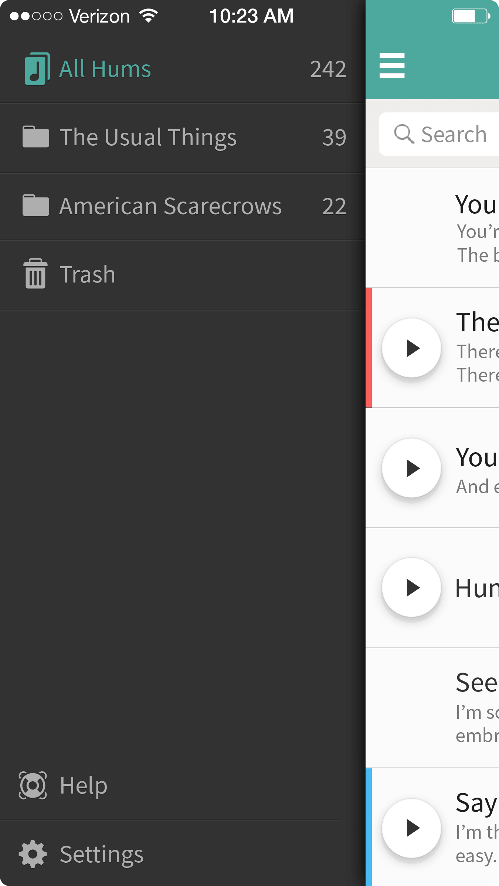
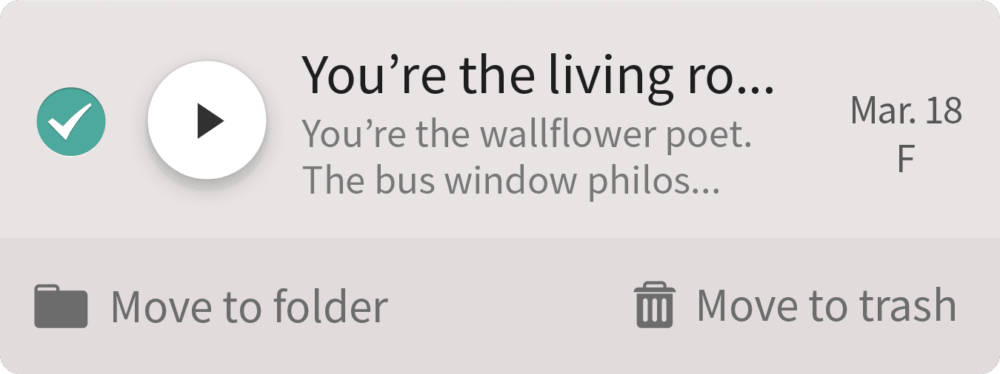

Hum
Hum is an iPhone app for songwriters. It collects all your lyrics, melodies, ideas, or riffs into one single, sortable place. It keeps all your ideas organized by key, tuning, and mood. It’s an ongoing collaboration between myself and a number of folks, @designatednerd, @josephkuefler, @evanolcott, @bendemaree, @trevorriles, and @comethrugirl.
Table of contents
Beginnings
Hum began as a shared problem between myself and Joseph Kuefler. As songwriters, we were tired of losing song ideas to voice memos and voicemails.
Keith Richards tells the tale of “(I Can’t Get No) Satisfaction” in Performing Songwriter:
On May 7, 1965, Keith Richards woke up in the middle of the night with a melody in his head. He was in a room at the Gulf Motel in Clearwater, Florida. His guitar was on the bed beside him. Fumbling around in the dark, he found his portable cassette recorder on the nightstand. He pushed the record button and played an eight-note riff. It was accompanied by the mumbled vocal line, “I can’t get no satisfaction.” Then he fell back asleep.
“On the tape you can hear me drop the pick,” Richards recalled. “The rest is me snoring.”
“The best camera is the one that’s with you.” –Chase Jarvis. This became incredibly true as the iPhone’s camera became more capable. Like the camera, its audio capabilities also became more impressive. The best recording studio is the one that’s with you.
The very first idea for my band The Usual Things’ song “The Radio” was recorded by phone as a voicemail. I’d excused myself from the meal I was at, borrowed a phone, exited the restaurant, and sang to myself in the parking lot.
Since the iPhone, our tools have evolved only slightly. Most musicians I’ve interviewed have a similar songwriting process. We play a bit on the guitar or piano, whatever our instrument of choice is. We stumble across a riff or progression that we want to remember or build on. We open our iPhone to Voice Memos and record about a minute or two. If it’s really solid we’ll email it to ourselves or text to bandmates.
The problem is once ideas are in a voice memo, they’re often lost. You can’t sort them. They’re hard to revisit. Names are based on the date they were recorded. You have no idea what key they’re in or how your guitar was tuned.
Meanwhile, lyrics are written at the time of inspiration—sitting on a bus, waiting in the airport, watching a show. They’re collected as Notes. They exist between shopping lists and to do lists. The context for these works are lost. You can’t assign audio memos to the lyrics.
So you press record in Voice Memos, switch over to Notes, sing the lyrics while strumming the guitar. Trim and share. This could be simplified. I got to sketching.
From sketches, I moved to low-fidelity wireframes. In this phase, I was able to figure out what kind of navigation and information architecture Hum would allow for.
We narrowed down the scope of what would be possible in the first version of Hum. We focused on capturing audio, lyrics, and sorting.
Since sorting was necessary, we needed the ability to add meta data to each song. We landed on being able to specify key, tuning, and mood. We shied away from major / minor tonality, and instead relied on a single root note. By only sorting by a single note you’ll get some interesting combinations you wouldn’t otherwise get when mixing potential verses and choruses. It also made for a simpler implementation.
We also allowed folks to apply tuning and mood-based meta data and filters.
Each Hum would have a page of lyrics, meta data, and notes. We’d also determined that Hums could be shared via email or iMessage.
With our scope defined, I moved quickly to high-fidelity mock ups. Originally, Hum was designed to be built for iOS 6. It featured an “almost flat” look. Buttons had very obvious shadows and structure, almost as if it was a physical device.
Shortly after this exploration, iOS 7 was announced. I wasn’t thrilled. On top of a jarring, new aesthetic, the iOS 7 music app looked remarkably similar to our red, early versions of Hum.
We’d originally intended to have teal as a secondary color we could use for branding and illustration purposes. With the switch to iOS 7, we rolled with it as our primary color. We flattened some things out, taking cues from the only control in iOS with any shadow whatsoever—UISlider.
First versions
At this point, I changed all the app mockups to use our new color scheme and flattened aesthetic. We also landed on Hoefler’s Whitney for the typeface. We found Mark Simonson’s Proxima Nova’s licensing fees to be cost-prohibitive for app bundling. That was a shame, since Mark’s based in the Twin Cities.
Full-fidelity mockups in hand, I started hacking on early alpha versions of Hum. I opened up Xcode for one of the first times to build Hum from scratch. It was slow going, but I found things clicked for me when I built everything programmatically. For whatever reason, I just couldn’t ever wrap my head around Interface Builder or Storyboards. I had no working conceptual model for how things were built. I needed the control that building things programmatically offered. Hum would feature many customizations. I needed control over them all.
I signed up for a developer account at Apple. I downloaded all the code samples I could get my hands on. I headed to Amazon and got Hillegass’s Big Nerd Ranch Guide to Objective-C Programming. I was going to figure out how to use what could easily be the ugliest language this designer has ever seen.
And it worked out, for the most part. I was able to build a static front-end in a few weeks. I added transitions and animations, but I still very much needed help on the “real” problems–audio recording, database & storage. I soon hired Ellen Shapiro to clean everything up and actually add some real functionality to it.
If you’re a designer who’s afraid of Xcode, have a look at Meng To’s excellent post “Learning Xcode 5 As a Designer”. It’s a good, practical starting point for all this nonsense. It’s woefully outdated at this point, but posts like these helped demystify iPhone development and got me started.
Anthem
As Ellen and I continued development of Hum, Joseph and I worked hard on crafting a video that would explain exactly what we were trying to achieve with Hum. Early in the process of building our brand, I’d written the following manifesto, for lack of a better term, to help solidify our thinking behind what Hum’s brand could mean.
You're the living room rock god.
You're the wallflower poet.
You're the bus window philosophizer.
The conductor of nap time symphonies.You're the rush hour's ?uestlove.
You're the shower's Freddie Mercury.
You're the break room's Beyonce.
The gym's Angus Young.Your art's not obedient.
Your art can't wait.
It doesn't care about meetings or your need to sleep,
It doesn't care about feelings or your need to eat.When the lightning strikes, you need to capture it.
When the muse calls, you go after it.
When a melody consumes you, you master it.
And when an idea's too good to lose.You remember it.
You Hum.
Feeling inspired, I built a score around these lyrics. I composed everything in my home studio, while recording the lyrics as a spoken word piece. I am not a voiceover artist. While I established the feel of the piece, Joseph storyboarded the video’s visuals.
We shot everything handheld in Minneapolis on the DSLRs we could borrow in time. Since some of our shots were very low light, we unified everything in editing by stripping the color and adding a slight grain where appropriate. Joseph skillfully filmed most shots, and also handled the edit. I’ve always been such a fan of how the timing of the cuts gets quicker as the score builds. Joseph also performed the final voiceover.
Website
After solidifying the design and direction of the product, I shifted my attention to Hum’s website. We went through a few iterations, eventually landing on a pretty standard single page layout that’s common to many app websites, but explained Hum clearly and concisely. It was also built fully-responsively and designed in Reflow, so that’s kinda neat.
 A very early pre-launch version of the site
A very early pre-launch version of the site
Launch
After a lengthy beta process, our first version of Hum was released on January 27th, 2014. We were happy to be featured by Apple as a Best New App in the music category. Our reviews were great, and we were thrilled with the download numbers.
We were also featured by the App Store’s twitter feed.
It's your notebook for songwriting. Record your Hum and start your masterpiece.http://t.co/gBZXKRKbNa pic.twitter.com/heNdSdSGii
— App Store (@AppStore) February 11, 2014
Refinements & details
Since Hum is a relatively simple app, it allows for refinements of basic functionality. It’s a wonderful playground for testing new interactions and animations. The following is a collection of these interactions that have been polished over the years.
When we first shipped Hum, iOS would smartly fall back to system fonts when the specified UI font didn't have a character it needed. In the case of sharps and flats, this inserted thicker characters that didn’t match our typeface. We built a custom version of Whitney that included those characters.
Other refinements have included our song view. We improved our navigation pattern and overall app contrast and legibility.
We were also able to build a tuner with a wonderful transition animation. We sold this as an in-app purchase for some time, but eventually brought it into the main app experience.

Not all our experiments have shipped, but some get to the point of being built, but shelved in favor of other features.
With version 1.3 of Hum, we built Dropbox syncing into the core functionality of the app. This way, people won’t lose their libraries if their phone ends up at the bottom of a lake. We took the opportunity to switch from a rather conventional website layout to something a bit more clever. The whole left panel of our current website stays put while the right scrolls independently. This keeps the main call to actions, watching our anthem or downloading the app present while folks can read about additional features. Like its predecessors, it too was designed responsively in Reflow.
Hum has a comprehensive set of release notes that explains every change we’ve made over the years. We’ve used it as an opportunity to name our larger releases after bands we love. Do check it out. 👍
Liner notes
As we continued to build and refine Hum, I wanted to take the opportunity to feature artists and their songwriting process. This started as a series of videos that Joseph and I would produce. We started small with local Minneapolis artist we knew and loved. The idea was simple: Visit an artist in their element, this could be an apartment, a practice space, working at a mall kiosk—anything, really, and film them at their craft.
We called this series The Liner Notes. We built a section of our website that would house all these vignettes, and determined that we’d need a logo. I contracted Phil Eggleston, an amazing local hand-letterer, to design our logo and title card. The hand-crafted feel was well-suited to the messy nature of songwriting and inspiration.
Like the Anthem, our process starts with the score first. We interview the artist, cut the interview together, and then build a score underneath their spoken bits. Then, we visit their space and capture as much as possible, cutting to the score.
Roadmap
Now that Hum has a nice userbase, and enough usable features for sustainability, we’ve taken a look at the future. In no particular order, here’s what we’ve been working on:
Multiple recordings
My use of Hum has gone beyond single ideas within a song. I want to be able to store every version of a Hum’s audio within a Hum, from that first sketch to a full band demo. I think we’ve come up with a pretty slick way of having multiple recordings per Hum.
After you’ve added a single recording, you’ll be able to swipe to add a new one. It’ll show your newest one first, but if you’d like, you can swipe back in time on the player to view other versions.
Trimming
Duh! Trimming has been a huge request from our users, and we need to make sure folks are able to trim the fat from their recordings. Our countdown alleviates some of the issues, but we need to make sure we’re able to cut out some of the awkward silence or audio of the band noodling before capturing a performance.
Folders & Trash
We’ve laid a lot of the groundwork for a larger redesign of Hum that’ll support folders. If you press and hold on a Hum in your library, it’ll pop open a view where you can manage which folders each Hum belongs to. With folders, you’ll be able to keep things organized by band or project. Lots of folks have been asking for this, and we’re excited to be working on it!
We’ll be introducing the trash as well so you won’t have to worry about accidentally deleting a Hum.
Hum is an incredible outlet. It’s the perfect playground for trying new user interface ideas—a perfect distillation of polish and functionality. I’m so proud to be able to give back to the music community that’s given me so much, both as a fan and an artist. Hum combines each of my passions in a beautiful, tangible way. I can’t imagine a better outlet for the convergance of all my skills.
Download Hum on the app store.